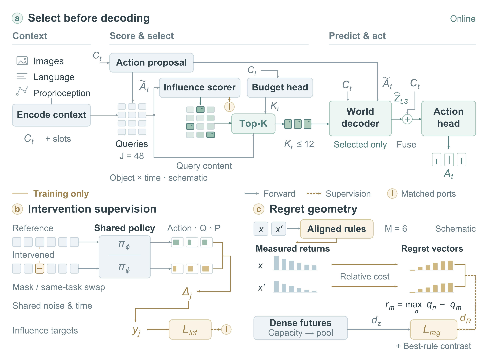
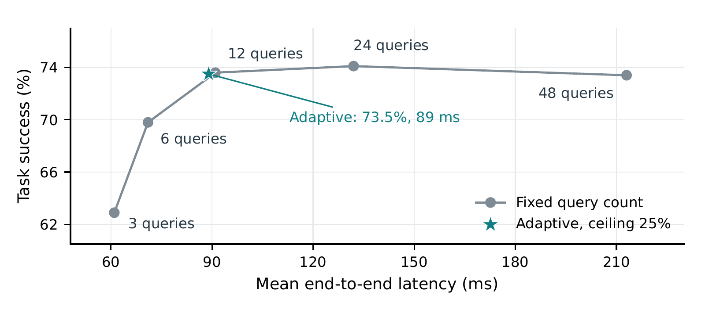
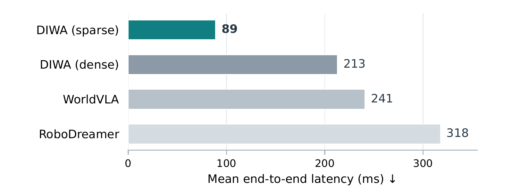

Score before decoding
A lightweight estimator scores 16 slots across 3 future offsets. A context-dependent budget selects up to 12 of the 48 queries.
48 queries → Top-K → sparse futures
ICLR 2027 submission / Anonymous authors
Imagine what matters.
Act with less computation.
73.5%
Four-platform success
+5.6 points vs. DreamVLA75.8%
Out-of-distribution success
+10.6 points vs. DreamVLA89 ms
Mean inference latency
58.2% lower than dense DIWA01 / The idea
A moving background may be visually complex. A small change in contact may be decision-critical.
DIWA allocates world-model computation to future information that influences the policy. It scores object–time queries before decoding them, then imagines only a selected subset.
From predictive detail to decision utilityPredicting future observations can improve robot decision making, but a controller need not model every visible change with equal fidelity. We introduce Decision-Influential World Abstraction (DIWA), a framework that allocates future modeling capacity according to its effect on action generation. A lightweight estimator ranks object–time queries before an action-conditioned world decoder expands them. Its supervision measures changes in action responses, value estimates, and task progress under latent interventions, with shared randomness for stochastic action heads. A complementary regret geometry organizes representations by the relative returns of aligned candidate action rules. During inference, only selected future queries are decoded, avoiding dense future generation. Across LIBERO, RoboTwin, RoboCasa, and real-robot manipulation, DIWA achieves 73.5% aggregate success, improving over DreamVLA by 5.6 percentage points. The out-of-distribution evaluation yields 75.8% success, a 10.6-point improvement. Mean inference latency is 89 ms, compared with 213 ms for dense imagination and 241 ms for WorldVLA. Three-seed simulation results, 300 physical trials per method, budget sweeps, and intervention diagnostics distinguish the roles of influence supervision, regret geometry, and selective computation. These results support using decision sensitivity to determine which future information a robot policy should compute.
02 / The method
One inference path.
Two complementary training signals.

Full figureA lightweight estimator scores 16 slots across 3 future offsets. A context-dependent budget selects up to 12 of the 48 queries.
Masking or swapping a future token changes action, value, and progress responses. Paired probes share noise and time.
Measured returns from six aligned candidate rules define regret vectors, shaping a decision-relevant latent geometry.
03 / The compute tradeoff
Moderate sparsity preserves performance.
Aggressive pruning has a cost.
Query rankings are illustrative, not recorded model activations.
Fixed 25% budget

Measured fixed-count settings. Lines connect observations; they do not predict intermediate performance.
04 / Measured results
Three simulation platforms.
Six physical task categories.
LIBERO: 84.4% / 79.6%
RoboTwin: 73.2% / 67.6%
RoboCasa: 64.4% / 59.1%
Real robot: 72.0% / 65.3%
Simulation means use training seeds 42, 43, and 44. Physical results use the seed-42 checkpoint. The four-platform macro-average weights platforms equally.
| Method | LIBERO | RoboTwin | RoboCasa | Real robot | Macro |
|---|---|---|---|---|---|
| Octo | 73.2 ± 0.70 | 55.6 ± 0.92 | 47.2 ± 0.72 | 50.0 | 56.5 |
| OpenVLA | 76.0 ± 0.56 | 59.8 ± 0.92 | 50.2 ± 0.72 | 56.0 | 60.5 |
| GR-1 | 77.4 ± 0.56 | 61.6 ± 0.92 | 53.4 ± 0.72 | 58.0 | 62.6 |
| RoboDreamer | 78.2 ± 0.66 | 64.0 ± 0.80 | 56.2 ± 0.72 | 60.0 | 64.6 |
| WorldVLA | 79.0 ± 0.56 | 65.8 ± 0.80 | 57.6 ± 0.92 | 62.0 | 66.1 |
| DreamVLA | 79.6 ± 0.66 | 67.6 ± 0.80 | 59.1 ± 0.81 | 65.3 | 67.9 |
| DIWA | 84.4 ± 0.56 | 73.2 ± 0.80 | 64.4 ± 0.80 | 72.0 | 73.5 |
Physical manipulation
Successful trials with DIWA
196 / 300 with DreamVLA
50 trials per task; one trained checkpoint. The largest task-level gains are insertion (+10 points) and multi-stage contact (+8 points).

Reported mean end-to-end latency. Timing uncertainty and complete run-level hardware records are unavailable.
05 / What makes the difference
Intervention supervision and regret geometry
complement selective computation.
| Variant | Standard | OOD | CF accuracy | Latency |
|---|---|---|---|---|
| DIWA Full model | 73.5 | 75.8 | 81.6 | 89 |
| Without influence estimator | 68.2 | 66.1 | 71.9 | 142 |
| Without cross-episode swaps | 71.4 | 70.2 | 72.8 | 88 |
| Without regret geometry | 69.3 | 68.2 | 70.6 | 89 |
| Dense imagination | 73.4 | 75.5 | 81.5 | 213 |
| Uniform Top-K | 70.6 | 68.9 | 74.3 | 88 |
Standard denotes the four-platform macro-average. CF accuracy measures decision-label correctness, not episode success. These point estimates do not establish matched retained counts across variants.
Spearman correlation
0.48 without swaps
Against all 48 interventions
65% without swaps
Spearman correlation
0.29 without regret geometry
06 / Evidence & scope
The manuscript distinguishes measured performance, model sensitivity, and theoretical guarantees.
Evaluation appendixSimulation uses training seeds 42, 43, and 44: 6,000 LIBERO episodes and 3,000 episodes per other simulation platform, per method. Physical evaluation uses 300 trials of the seed-42 checkpoint. No training-seed SD is assigned to the mixed four-platform aggregate.
Latent interventions measure sensitivity within the learned policy, not identified environmental causal effects. Regret equivalence concerns a finite, aligned six-rule candidate bank. Correlation alone does not establish metric calibration.
DIWA adds candidate-return and progress supervision to its DreamVLA backbone. The comparison measures the complete system. Hardware, timing repetitions, diagnostic sample records, and some variant configurations are incomplete. Dense training costs are not inferred from sparse inference savings.
07 / Take a closer look
Materials accompanying
the anonymous submission.
Full manuscript and appendices
PDF · 18 pagesLaTeX, figures, tables, and scripts
ZIP archiveReported results and derived statistics
JSON dataThe current release contains manuscript source and numerical summaries. Training code, model weights, and rollout recordings are not included.